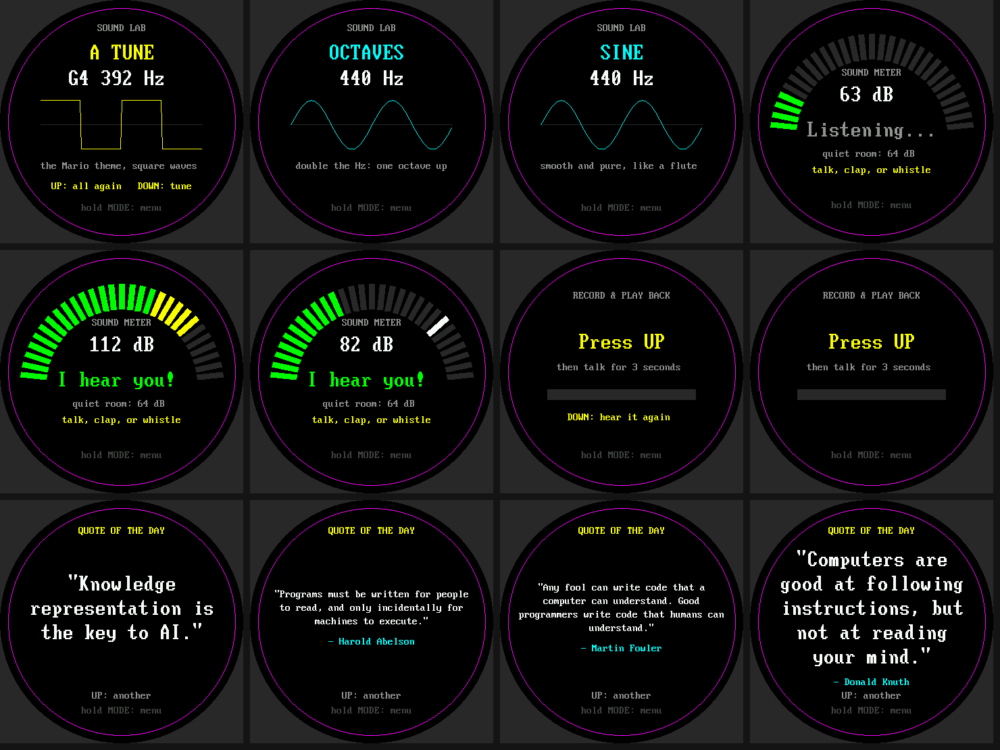

Study Buddy Base Kit¶
The Study Buddy base kit is a Raspberry Pi Pico 2 W with a 2.1 inch round color display, three buttons, a microphone, and a speaker. The nineteen labs below teach you to program every part, one idea per lab. They are written for a student who has finished the Learning MicroPython course.

New here? Start with the introduction. It describes each part, shows how they are wired, and explains how to put the lab files on your Pico. Then build the wiring harnesses: three ribbon cables that plug the display, amplifier and microphone into the breadboard as blocks.
The Labs¶
Part 1: Does It Work?¶
One test per part, so you can wire the kit a piece at a time and know each piece works before you add the next.
| Lab | Title | Parts used | What you learn |
|---|---|---|---|
| 01 | Blink the Onboard LED | Pico | Run a program; Pin("LED"); while True |
| 02 | The Hardware Probe | Pico, then everything | Let a program inspect its own hardware |
| 03 | Buttons on the Console | Buttons | Pull-ups, lists, a first debounce |
| 04 | Hello World on the Display | Display | Coordinates, the round screen, centering text |
| 05 | Speaker Tones | Amplifier, speaker | Samples, sine waves, I2S, volume |
| 06 | Listen with the Microphone | Display, microphone | Loudness, noise floor, logarithms |
| 07 | Hold to Record, Release to Play Back | Button, mic, speaker, display | Buffers, memoryview, converting samples |
Part 2: How Does It Work?¶
One idea per lab, each building on the last.
| Lab | Title | Parts used | The big idea |
|---|---|---|---|
| 08 | How the Display Mixes Color | Display | RGB565: 5 + 6 + 5 bits |
| 09 | Angles to Pixels | Display | Sine and cosine place things on a circle |
| 10 | Flicker-Free Text | Display | Drawing is sending: send only what changed |
| 11 | What a Button Press Really Looks Like | Buttons, display | Level versus edge, bounce, debounce |
| 12 | One Loop, Many Jobs | LED, buttons, display | Check the clock; don't sleep |
| 13 | Modes as a State Machine | Buttons, display | A state variable and a table of functions |
| 14 | Samples Make Sound | Speaker, display | Sample rate, Nyquist, aliasing |
| 15 | Envelopes | Speaker, display | Why a pluck is not an organ |
| 16 | A Microphone Oscilloscope | Mic, display | DC offset, gain, trigger |
| 17 | A Whistle Tuner | Mic, display | Zero crossings, hysteresis, notes and cents |
| 18 | From Radio Waves to the Weather | WiFi, display | Layers: radio, IP, NTP, HTTP, JSON |
Part 3: Put It All Together¶
| Lab | Title | Parts used | What you build |
|---|---|---|---|
| 19 | Pattern Memory Game | The whole kit | A game that uses every earlier idea |
Which Labs Make Sound?¶
Labs 05, 07, 14, 15, and 19 play sound. Lab 02 never does. If you are somewhere quiet, run
the others first, and keep VOLUME in config.py low.
Labs That Need the Internet¶
Only Lab 18 needs WiFi and a secrets.py file. It is also needed by
the clock and weather screen of the finished demo.
The Parts at a Glance¶
| Part | What it does |
|---|---|
| Raspberry Pi Pico 2 W | The microcontroller, with WiFi and Bluetooth |
| 2.1 inch round color display | A 360 x 360 pixel GC9B72 screen |
| MAX98357A amplifier and speaker | A 3 W amplifier that plays sound |
| INMP441 microphone | A low-noise digital microphone |
| Three buttons | MODE, UP, and DOWN |
| Half-size breadboard | A 400-tie breadboard to hold it all |
The Software¶
The kit is programmed in MicroPython, using the Thonny editor, which is simple enough
for everyone and has debugging tools that experts use too. The mpremote command-line tool
copies files to the Pico. All of these are covered in the
MicroPython Environment
chapter of the course.
The Finished Demo¶
When you have finished the labs, put main.py on the Pico and it will run at power-up: a showcase
of twelve screens that include a clock, an alarm, a timer, a stopwatch, school events, tones, a
sound meter, a recorder, a quote of the day, a Spanish quiz, and flash cards.
The introduction lists them all.
